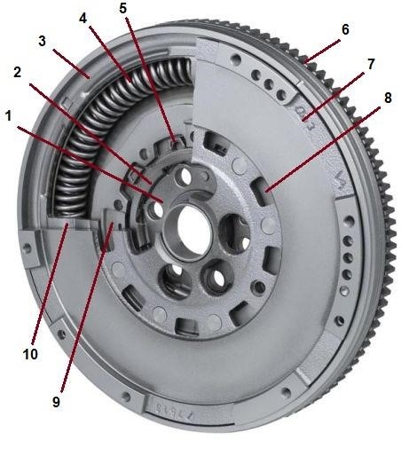
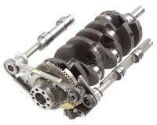
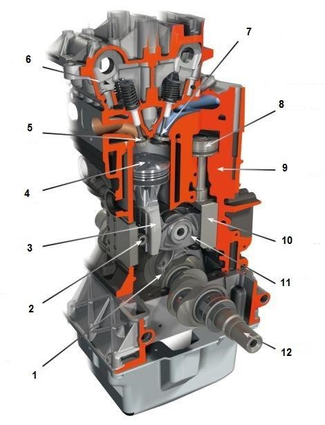

При работе двигателя на разных оборотах коленчатый вал постоянно закручивается и раскручивается, т.е. подвергается крутильным колебаниям. В двигателе применяются гасители крутильных колебаний различной конструкции. Одним из таких устройств является двухмассовый маховик (другое название – демпферный маховик), который применяется на автомобильных двигателях с 1985 года.
Рисунок 1 – Двухмассовый маховик
- ступица
- радиальный подшипник
- первичный диск
- дуговая пружина
- фланец
- зубчатый венец
- вторичный диск
- вентиляционное отверстие
- уплотнительная мембрана
- кольцевая камера, заполненная смазкой
Маховик включает два диска, соединенные с помощью пружиннодемпферной системы, которая позволяет полностью изолировать трансмиссию от крутильных колебаний и обеспечить равномерную работу ее элементов. С применением двухмассового маховика отпадает необходимость демпфирующего устройства в ведомом диске сцепления.
Преимуществами двухмассового маховика являются гашение колебаний, снижение вибраций, изоляция шумов, удобство переключения передач, снижение износа синхронизаторов, защита трансмиссии от перегрузки и даже экономия топлива. С другой стороны интенсивная работа двухмассового маховика приводит к усиленному износу пружиннодемпферной системы и даже поломке ее основного элемента - дуговой пружины. Все это сдерживает массовое применение демпферного маховика на двигателях.
Современные тенденции развития автомобильных двигателей, такие как даунсайзинг (уменьшение объема и массы двигателя с сохранением мощности) и даунспидинг (расширение диапазона крутящего момента двигателя с возможностью работы на низких оборотах), потребовали нового уровня гашения колебаний. С 2008 года на двигателях применяется двухмассовый маховик с маятниковым гасителем колебаний.
Для устранения неравномерностей вращения коленчатого вала в диапазоне низких оборотов на маховике вместе с дуговой пружиной устанавливается центробежный маятник. Он создает собственные колебания , которые в противофазенакладываются на сглаженные колебания после дуговой пружины и полностью их гасит.
Центробежный маятник выполнен в виде грузов, расположенных по окружности маховика. При низких оборотах двигателя грузы маятника раскачиваются сильнее, т.к. действующие на них центробежные силы малые. При увеличении оборотов амплитуда колебаний грузов уменьшается и их роль в гашении колебаний снижается.
Облегченный маховик используется при тюнинге двигателя. Перераспределение массы маховика к краям диска позволяет уменьшить его массу до 1,5 кг и в свою очередь уменьшить момент инерции. С применением облегченного маховика двигатель быстрее достигает максимальных оборотов, соответственно имеет лучшую разгонную динамику, а также наблюдается увеличение мощности до 5%.
Балансирные валы
Работа кривошипно-шатунного механизма сопровождается возникновением сил инерции от движения его конструктивных элементов. Различают силы инерции возвратно-поступательно движущихся масс (поршни) и вращающихся масс (шатуны). В многоцилиндровом двигателе силы инерции в отдельных цилиндрах создают еще и моменты инерции в продольной плоскости. В совокупности силы и моменты вызывают вибрацию двигателя, которая передается на кузов и сопровождается повышенным уровнем шума, перегрузками и увеличением износа элементов.
Для противодействия вибрации производится уравновешивание (балансировка) двигателя. Наиболее распространенным способом балансировки является установка дополнительных противовесов на щеках коленчатого вала. Вместе с тем данный способ не позволяет уравновесить силы инерции, возникающие в двигателях различных компоновочных схем. Так, в четырехцилиндровом рядном двигателе неуравновешенными остаются силы инерции второго порядка (силы, возникающие при движении масс с удвоенной частотой коленчатого вала). При этом величина сил инерции увеличивается с ростом объема двигателя.
Рисунок 2 – Балансирные валы
Для уравновешивания сил инерции второго порядка в четырехцилиндровых рядных двигателях рабочим объемом 2,0 и более литра применяются дополнительные валы с противовесами – т.н. балансирные валы. Впервые балансирные валы на своих автомобилях применила в 1976 году компания Mitsubishi, технология получила название Silent Shaft (бесшумный вал). В настоящее время балансирные валы достаточно широко используются в продукции других автопроизводителей – VW, Audi, BMW, Mercedes-Benz, GM.
Балансирные валы устанавливаются попарно с одной и другой стороны коленчатого вала, как правило, симметрично. Наиболее предпочтительной в плане занимаемого объема является установка балансирных валов в картере двигателя ниже коленчатого вала. Балансирный вал представляет собой деталь сложной формы, обычно это металлический стержень с выбранными в нем пазами. Балансирный вал вращается в двух подшипниках скольжения, смазываемых в составе системы смазки двигателя.
Привод балансирных валов осуществляется непосредственно от коленчатого вала и обеспечивает вращение валов в разные стороны с удвоенной угловой скоростью. В качестве привода могут использоваться зубчатый редуктор, цепная передача или их комбинация. Для гашения крутильных колебаний, возникающих при вращении валов, в приводной звездочке цепного привода устанавливается пружинный гаситель колебаний.
В силу своей конструкции балансирные валы при работе испытывают значительные нагрузки. Особенно нагружены дальние от привода подшипники. Все это приводит к ускоренному износу подшипников, а также элементов привода. Износ сопровождается шумом, вибрацией и может привести к обрыву приводной цепи. Последствия для двигателя такой поломки несложно представить.
Ремонт балансирных валов – дорогое удовольствие. Поэтому отечественные умельцы просто от валов избавляются, а отверстия в картере закрывают заглушками. Вибрация, конечно, увеличивается, но опоры двигателя с ней неплохо справляются. Так делать ЗАПРЕЩЕНО! Помимо повышенного износа, применение балансирных валов усложняет и удорожает конструкцию двигателя. При этом потери мощности двигателя на их привод могут достигать 15 л.с.
Система изменения степени сжатия
Степень сжатия – важная характеристика двигателя внутреннего сгорания, определяемая отношением объема цилиндра при нахождении поршня в нижней мертвой точке к объему в верхней мертвой точке (объему камеры сгорания). Повышение степени сжатия создает благоприятные условия для воспламенения и сгорания топливно-воздушной смеси и, соответственно, эффективного использования энергии. Вместе с тем, работа двигателя на разных режимах и разных топливах предполагает разную величину степени сжатия. Эти свойства в полной мере используются системой изменения степени сжатия.
Система обеспечивает повышение мощности и крутящего момента двигателя, снижение расхода топлива и вредных выбросов. Основная заслуга системы изменения степени сжатия в способности работы двигателя на разных марках бензина и даже разных топливах без ухудшения характеристик и детонации.
Создание двигателя с переменной степенью сжатия достаточно сложная техническая задача, в решении которой существует несколько подходов, заключающихся в изменении объема камеры сгорания. В настоящее время имеются опытные образцы таких силовых установок.
Пионером в создании двигателя с переменной степенью сжатия является фирма SAAB, представившая в 2000 году пятицилиндровый двигатель внутреннего сгорания, оборудованный системой Variable Compression. В двигателе использована объединенная головка блока цилиндров с гильзами цилиндров. Объединенный блок с одной стороны закреплен на валу, с другой взаимодействует с кривошипно-шатунным механизмом. КШМ обеспечивает смещение объединенной головки от вертикальной оси на 4°, чем достигается изменение степени сжатия в пределе от 8:1 до 14:1.
Необходимое значение степени сжатия поддерживается системой управления двигателем в зависимости от нагрузки (при максимальной нагрузке – минимальная степень сжатия, при минимальной – максимальная степень сжатия). Несмотря на впечатляющие результаты двигателя по мощности и крутящему моменту, силовая установка не пошла в серию, а работы по ней в настоящее время свернуты.
Более современной разработкой (2010 год) является 4-х цилиндровый двигатель от MCE-5 Development объемом 1,5 л. Помимо системы изменения степени сжатия двигатель оснащен другими прогрессивными системами – непосредственного впрыска и изменения фаз газораспределения.
Конструкция двигателя предусматривает независимое изменение величины хода поршня в каждом цилиндре. Зубчатый сектор, выполняющий роль коромысла, с одной стороны взаимодействует с рабочим поршнем, с другой – с поршнем управления. Коромысло рычагом соединено с коленчатым валом двигателя.
Зубчатый сектор перемещается под действием поршня управления, выполняющего роль гидроцилиндра. Объем над поршнем заполнен маслом, объем которого регулируется клапаном. Перемещение сектора обеспечивает изменение положения верхней мертвой точки поршня, чем достигается изменение объема камеры сгорания. Соответственно изменяется степень сжатия в пределе от 7:1 до 20:1.
Рисунок 3 - Схема двигателя с переменной степенью сжатия MCE-5
- соединительный рычаг
- шестерня синхронизации
- стойка поршня
- рабочий поршень
- выпускной клапан
- головка блока цилиндров
- впускной клапан
- поршень управления
- блок цилиндров
- стойка поршня управления
- зубчатый сектор
- коленчатый вал
Двигатель MCE-5 имеет все шансы попасть в серию в ближайшей перспективе.
Еще дальше в своих исследованиях пошел Lotus Cars, представив двухтактный двигатель Omnivore (дословно – всеядное животное). Как заявлено, двигатель способен работать на любом виде жидкого топлива – бензин, дизельное топливо, этанол, спирт и др.
В верхней части камеры сгорания двигателя выполнена шайба, которая перемещается эксцентриковым механизмом и изменяет объем камеры сгорания. С такой конструкцией достигается рекордная степень сжатия 40:1. Тарельчатые клапаны в газораспределительном механизме двигателя Omnivore не используются.
Дальнейшее развитие системы сдерживает низкая топливная экономичность и экологичность двухтактных двигателей, а также их ограниченное применение на автомобилях.
Видеоролик по теме занятия доступен по ссылке